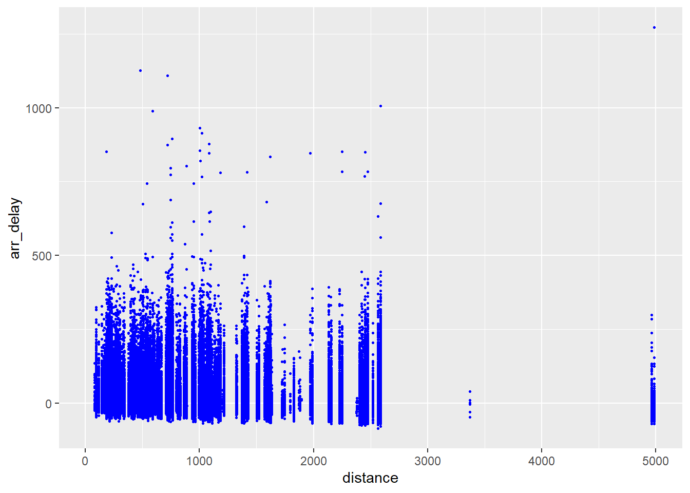
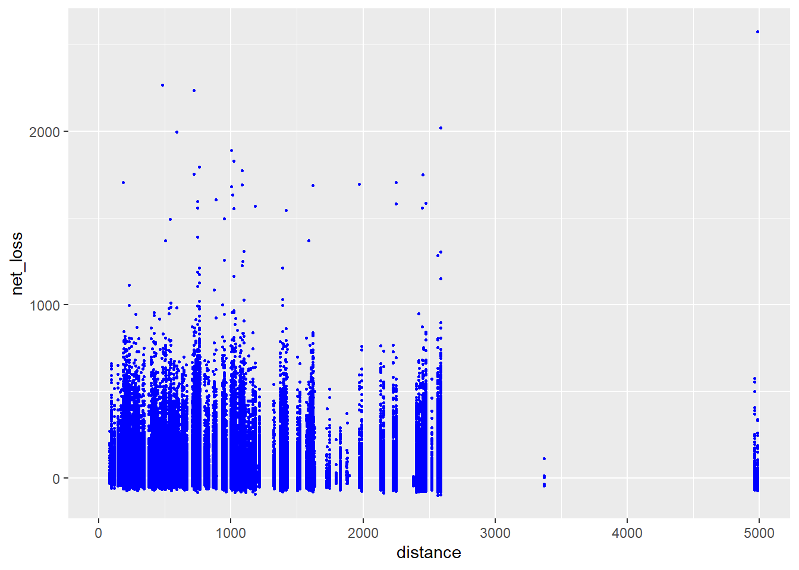
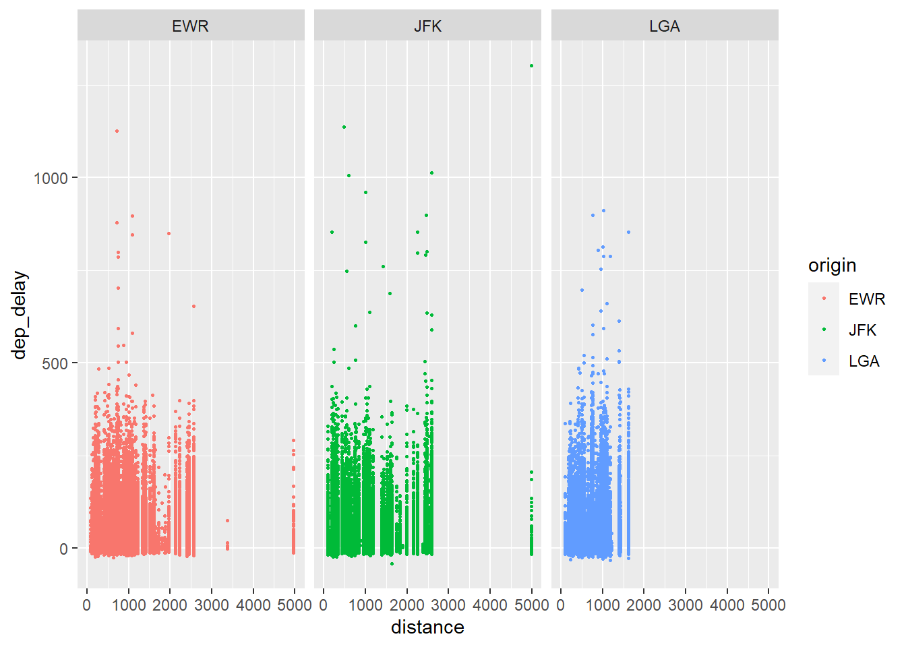
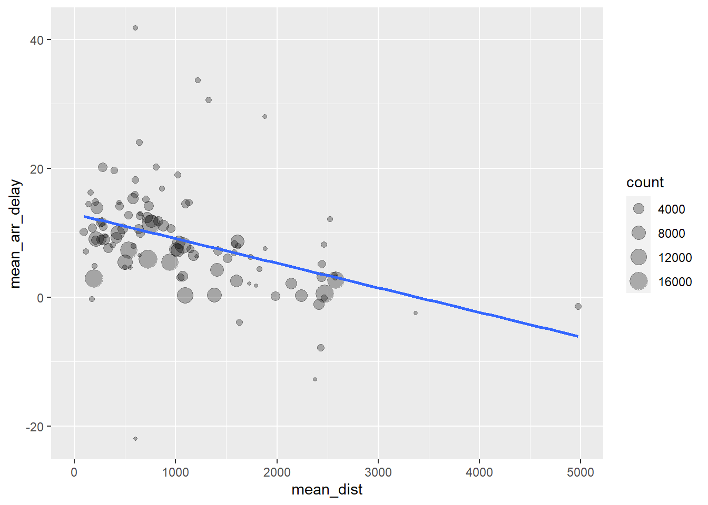
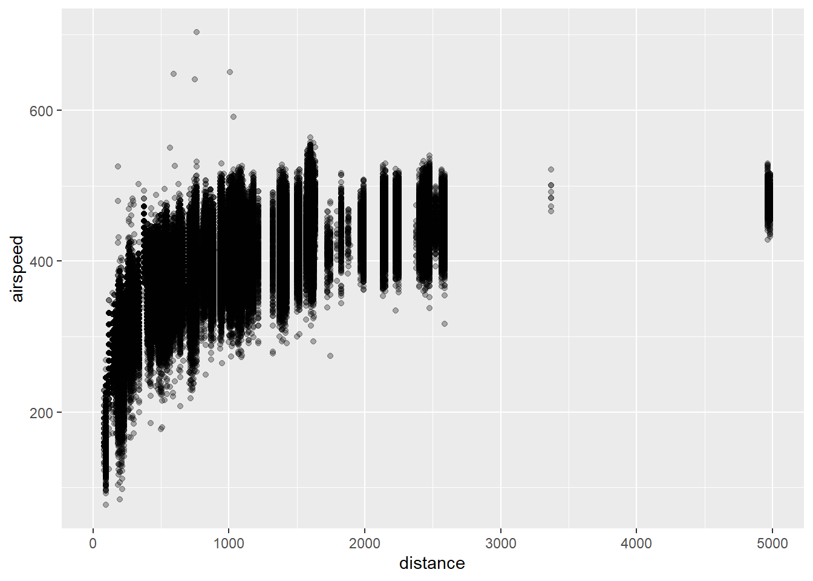
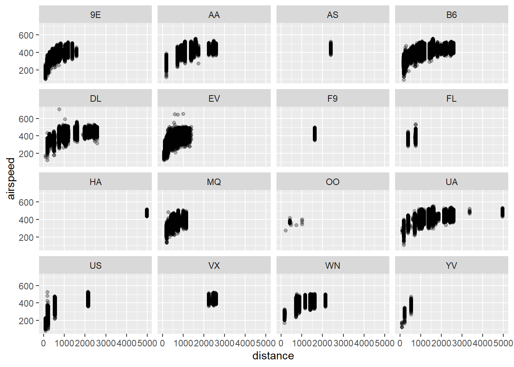
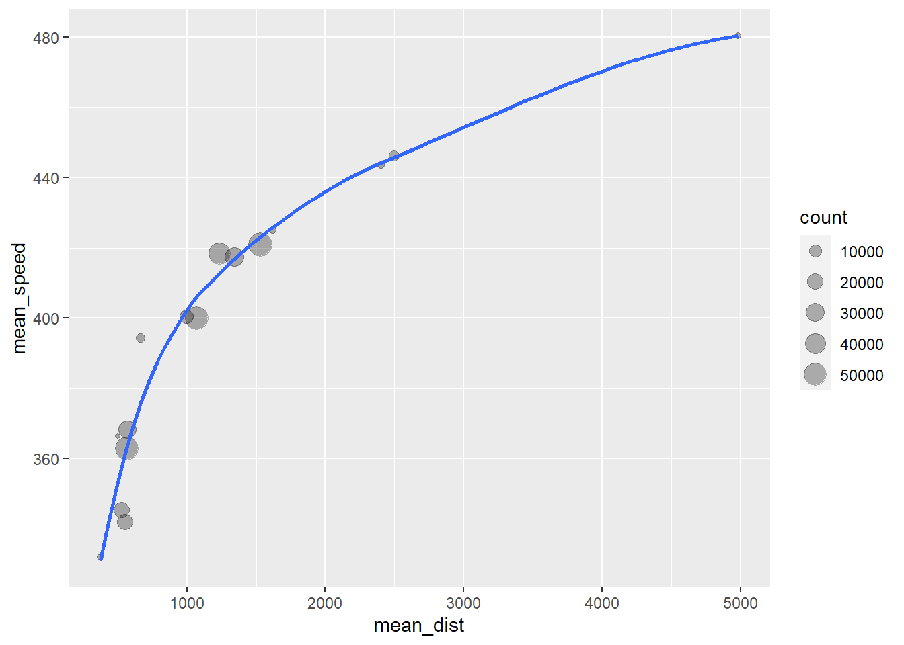

Chapter 6 Data transformation with dplyr
6.1 Introduction
# import libraries
library(nycflights13)
library(tidyverse)
# load data
df <- nycflights13::flights
head(df)## # A tibble: 6 × 19
## year month day dep_time sched_dep_time dep_delay arr_time sched_arr_time
## <int> <int> <int> <int> <int> <dbl> <int> <int>
## 1 2013 1 1 517 515 2 830 819
## 2 2013 1 1 533 529 4 850 830
## 3 2013 1 1 542 540 2 923 850
## 4 2013 1 1 544 545 -1 1004 1022
## 5 2013 1 1 554 600 -6 812 837
## 6 2013 1 1 554 558 -4 740 728
## # … with 11 more variables: arr_delay <dbl>, carrier <chr>, flight <int>,
## # tailnum <chr>, origin <chr>, dest <chr>, air_time <dbl>, distance <dbl>,
## # hour <dbl>, minute <dbl>, time_hour <dttm>str(df)## tibble [336,776 × 19] (S3: tbl_df/tbl/data.frame)
## $ year : int [1:336776] 2013 2013 2013 2013 2013 2013 2013 2013 2013 2013 ...
## $ month : int [1:336776] 1 1 1 1 1 1 1 1 1 1 ...
## $ day : int [1:336776] 1 1 1 1 1 1 1 1 1 1 ...
## $ dep_time : int [1:336776] 517 533 542 544 554 554 555 557 557 558 ...
## $ sched_dep_time: int [1:336776] 515 529 540 545 600 558 600 600 600 600 ...
## $ dep_delay : num [1:336776] 2 4 2 -1 -6 -4 -5 -3 -3 -2 ...
## $ arr_time : int [1:336776] 830 850 923 1004 812 740 913 709 838 753 ...
## $ sched_arr_time: int [1:336776] 819 830 850 1022 837 728 854 723 846 745 ...
## $ arr_delay : num [1:336776] 11 20 33 -18 -25 12 19 -14 -8 8 ...
## $ carrier : chr [1:336776] "UA" "UA" "AA" "B6" ...
## $ flight : int [1:336776] 1545 1714 1141 725 461 1696 507 5708 79 301 ...
## $ tailnum : chr [1:336776] "N14228" "N24211" "N619AA" "N804JB" ...
## $ origin : chr [1:336776] "EWR" "LGA" "JFK" "JFK" ...
## $ dest : chr [1:336776] "IAH" "IAH" "MIA" "BQN" ...
## $ air_time : num [1:336776] 227 227 160 183 116 150 158 53 140 138 ...
## $ distance : num [1:336776] 1400 1416 1089 1576 762 ...
## $ hour : num [1:336776] 5 5 5 5 6 5 6 6 6 6 ...
## $ minute : num [1:336776] 15 29 40 45 0 58 0 0 0 0 ...
## $ time_hour : POSIXct[1:336776], format: "2013-01-01 05:00:00" "2013-01-01 05:00:00" ...Notice that str() is telling us this data frame is a tibble object. A tibble is a data frame that’s been augmented underneath the hood for use in the tidyverse.
The main package we will use to do data transformations is the dplyr package. There are 6 main functions to understand:
filter()filters out the rows of a data frame by some specified condition.arrange()rearranges the rows of a data frame according to some specification.select()picks out selected columns in a data frame.mutate()creates new columns by operating on existing ones.summary()collapses the data frame down to a single row, value or column summary.group_by()changes the scope of each function to operate on a group-by-group basis.
The idea is to assemble these functions into a pipeline: each function takes in an existing data frame, creates a new data frame and passes it to the next function.
6.2 Filtering rows with filter()
6.2.1 Filtering conditions
filter() allows us to create a subset of a data frame by grabbing the rows which meet some specified logical condition.
# return the flights on January 1st
filter(df, month == 1, day == 1)## # A tibble: 842 × 19
## year month day dep_time sched_dep_time dep_delay arr_time sched_arr_time
## <int> <int> <int> <int> <int> <dbl> <int> <int>
## 1 2013 1 1 517 515 2 830 819
## 2 2013 1 1 533 529 4 850 830
## 3 2013 1 1 542 540 2 923 850
## 4 2013 1 1 544 545 -1 1004 1022
## 5 2013 1 1 554 600 -6 812 837
## 6 2013 1 1 554 558 -4 740 728
## 7 2013 1 1 555 600 -5 913 854
## 8 2013 1 1 557 600 -3 709 723
## 9 2013 1 1 557 600 -3 838 846
## 10 2013 1 1 558 600 -2 753 745
## # … with 832 more rows, and 11 more variables: arr_delay <dbl>, carrier <chr>,
## # flight <int>, tailnum <chr>, origin <chr>, dest <chr>, air_time <dbl>,
## # distance <dbl>, hour <dbl>, minute <dbl>, time_hour <dttm>Notice that the logical comparison month == 1 is being made element-wise down the month column. The same is true for day == 1. The general syntax of logical operators and operations on columns is always like this, i.e. if you see a column name in an operation, it is happening element-wise.
We can combine these logical conditions together using the usual boolean operators:
# return the flights in January or February
filter(df, month == 1 | month == 2)## # A tibble: 51,955 × 19
## year month day dep_time sched_dep_time dep_delay arr_time sched_arr_time
## <int> <int> <int> <int> <int> <dbl> <int> <int>
## 1 2013 1 1 517 515 2 830 819
## 2 2013 1 1 533 529 4 850 830
## 3 2013 1 1 542 540 2 923 850
## 4 2013 1 1 544 545 -1 1004 1022
## 5 2013 1 1 554 600 -6 812 837
## 6 2013 1 1 554 558 -4 740 728
## 7 2013 1 1 555 600 -5 913 854
## 8 2013 1 1 557 600 -3 709 723
## 9 2013 1 1 557 600 -3 838 846
## 10 2013 1 1 558 600 -2 753 745
## # … with 51,945 more rows, and 11 more variables: arr_delay <dbl>,
## # carrier <chr>, flight <int>, tailnum <chr>, origin <chr>, dest <chr>,
## # air_time <dbl>, distance <dbl>, hour <dbl>, minute <dbl>, time_hour <dttm># return all flights except those by United Airlines
filter(df, carrier != "UA")## # A tibble: 278,111 × 19
## year month day dep_time sched_dep_time dep_delay arr_time sched_arr_time
## <int> <int> <int> <int> <int> <dbl> <int> <int>
## 1 2013 1 1 542 540 2 923 850
## 2 2013 1 1 544 545 -1 1004 1022
## 3 2013 1 1 554 600 -6 812 837
## 4 2013 1 1 555 600 -5 913 854
## 5 2013 1 1 557 600 -3 709 723
## 6 2013 1 1 557 600 -3 838 846
## 7 2013 1 1 558 600 -2 753 745
## 8 2013 1 1 558 600 -2 849 851
## 9 2013 1 1 558 600 -2 853 856
## 10 2013 1 1 559 600 -1 941 910
## # … with 278,101 more rows, and 11 more variables: arr_delay <dbl>,
## # carrier <chr>, flight <int>, tailnum <chr>, origin <chr>, dest <chr>,
## # air_time <dbl>, distance <dbl>, hour <dbl>, minute <dbl>, time_hour <dttm># return all flights except United flights originating from JFK
filter(df, !(carrier == "UA" & origin == "JFK"))## # A tibble: 332,242 × 19
## year month day dep_time sched_dep_time dep_delay arr_time sched_arr_time
## <int> <int> <int> <int> <int> <dbl> <int> <int>
## 1 2013 1 1 517 515 2 830 819
## 2 2013 1 1 533 529 4 850 830
## 3 2013 1 1 542 540 2 923 850
## 4 2013 1 1 544 545 -1 1004 1022
## 5 2013 1 1 554 600 -6 812 837
## 6 2013 1 1 554 558 -4 740 728
## 7 2013 1 1 555 600 -5 913 854
## 8 2013 1 1 557 600 -3 709 723
## 9 2013 1 1 557 600 -3 838 846
## 10 2013 1 1 558 600 -2 753 745
## # … with 332,232 more rows, and 11 more variables: arr_delay <dbl>,
## # carrier <chr>, flight <int>, tailnum <chr>, origin <chr>, dest <chr>,
## # air_time <dbl>, distance <dbl>, hour <dbl>, minute <dbl>, time_hour <dttm>Any operator which returns a logical value is a valid condition. For example, let’s say we wanted to get all the flights from January to June of 2013. Instead of chaining together 6 different “OR” statements, we can instead use the %in% operator:
# return the flights from Jan to June
filter(df, year == 2013, month %in% c(1,2,3,4,5,6))## # A tibble: 166,158 × 19
## year month day dep_time sched_dep_time dep_delay arr_time sched_arr_time
## <int> <int> <int> <int> <int> <dbl> <int> <int>
## 1 2013 1 1 517 515 2 830 819
## 2 2013 1 1 533 529 4 850 830
## 3 2013 1 1 542 540 2 923 850
## 4 2013 1 1 544 545 -1 1004 1022
## 5 2013 1 1 554 600 -6 812 837
## 6 2013 1 1 554 558 -4 740 728
## 7 2013 1 1 555 600 -5 913 854
## 8 2013 1 1 557 600 -3 709 723
## 9 2013 1 1 557 600 -3 838 846
## 10 2013 1 1 558 600 -2 753 745
## # … with 166,148 more rows, and 11 more variables: arr_delay <dbl>,
## # carrier <chr>, flight <int>, tailnum <chr>, origin <chr>, dest <chr>,
## # air_time <dbl>, distance <dbl>, hour <dbl>, minute <dbl>, time_hour <dttm>
6.2.2 Dealing with missing values
The null value in R is the NA value (short for “Not Available”). An NA value represents a missing piece of information (whatever the cause maybe) and should be treated as an “I don’t know” value. For example, John_age <- NA should be interpreted as “we don’t know John’s age”.
NA values in R behave very interestingly from a computer science perspective. Here are some examples its quirky behavior:
# is NA greater than 5?
NA > 5## [1] NA# is NA equivalent to 10?
10 == NA## [1] NA# can we add 10 to NA?
NA + 10## [1] NA# can we divide NA by 2?
NA/2## [1] NANotice we always get back NA for each of the comparisons and operations. This is because NA represents “I don’t know” so the validity of each operation and conditional is also “I don’t know”.
Even more amusing is the following phenomena:
# is NA the same as NA?
NA == NA## [1] NAR is saying “I don’t know if NA is equal to NA.” Again this makes sense if we interpret NA as “I don’t know”: if R doesn’t know what the 2 values are, then R doesn’t know if they are equal. This interpretation is also helpful for understanding the following situations:
NA | TRUE## [1] TRUENA & FALSE## [1] FALSENotice that both conditionals returned a logical value. This is because ” anything OR true” is always true, while “anything AND false” is always false. In these two cases, we don’t need to know the value of NA in order to decide on the value of the overall expression.
However, things get baffling once again when considering the following example and counterexample:
NA^0## [1] 1NA * 0## [1] NAThe expression NA^0 returns 1 since “anything raised to the 0th power returns 1” and we shouldn’t need to know the value of NA to evaluate the expression. However the same logic goes out the window when considering NA*0 which returns NA: theoretically “anything times 0 returns 0” so the value so we shouldn’t need to know hte value of NA to evaluate this expression either. Yet, the expression still returns NA. The latter behavior actually makes more sense since Inf^0 and Inf*0 are both indeterminate forms.
The fundamental issue isn’t actually one of mathematics but one of computer science. Specifically, R (and most programming languanges) come equipped with abstract data values to present missing values, null values, and infinity: NA, NaN, Inf, -Inf. The general paradigm in computer science is that these values should propagate through computations that use them. For example 2*NaN+7 should return NaN to indicate something is the appearance of a NaN value in the original expression. This makes debuggin easier since we wouldn’t have to check a chain of functions f_1 -> f_2 -> f_3 -> ... -> f_1000 for possible NaN values; if any NaNs show up, we’ll see them in the final output.
However, one exception to this paradigm is is the pow(x,y) function which returns x^y. As defined by the Institute of Electrical and Electronics Engineering (IEEE) Standard for Floating-Point Arithmetic in 2008, the power functions pow(x,y) should have pow(qNaN,0) return 1. Thus NA^0 returning 1 is the exception, not the norm.
Despite being humorous and a bit charming, this NA == NA returning NA phenomenon actually presents problem: how do we filter out missing values? In our data frame, the dep_time column has 8255 missing values and let’s say we wanted to purge them. Consider the following code:
# filter out rows with missing values in the dep_time column
filter(df, dep_time != NA)## # A tibble: 0 × 19
## # … with 19 variables: year <int>, month <int>, day <int>, dep_time <int>,
## # sched_dep_time <int>, dep_delay <dbl>, arr_time <int>,
## # sched_arr_time <int>, arr_delay <dbl>, carrier <chr>, flight <int>,
## # tailnum <chr>, origin <chr>, dest <chr>, air_time <dbl>, distance <dbl>,
## # hour <dbl>, minute <dbl>, time_hour <dttm>Notice that the condition dep_time != NA filtered out all the rows! What happened is that dep_time != NA returned an NA value for all rows, hence all rows got filtered out.
The proper way to filter out missing values is to use the is.na() operator. This returns TRUE if the value is an NA and FALSE otherwise.
# select missing values from the dep_time column
filter(df, is.na(dep_time))## # A tibble: 8,255 × 19
## year month day dep_time sched_dep_time dep_delay arr_time sched_arr_time
## <int> <int> <int> <int> <int> <dbl> <int> <int>
## 1 2013 1 1 NA 1630 NA NA 1815
## 2 2013 1 1 NA 1935 NA NA 2240
## 3 2013 1 1 NA 1500 NA NA 1825
## 4 2013 1 1 NA 600 NA NA 901
## 5 2013 1 2 NA 1540 NA NA 1747
## 6 2013 1 2 NA 1620 NA NA 1746
## 7 2013 1 2 NA 1355 NA NA 1459
## 8 2013 1 2 NA 1420 NA NA 1644
## 9 2013 1 2 NA 1321 NA NA 1536
## 10 2013 1 2 NA 1545 NA NA 1910
## # … with 8,245 more rows, and 11 more variables: arr_delay <dbl>,
## # carrier <chr>, flight <int>, tailnum <chr>, origin <chr>, dest <chr>,
## # air_time <dbl>, distance <dbl>, hour <dbl>, minute <dbl>, time_hour <dttm># filter out the missing values from the dep_time column
filter(df, !(is.na(dep_time)))## # A tibble: 328,521 × 19
## year month day dep_time sched_dep_time dep_delay arr_time sched_arr_time
## <int> <int> <int> <int> <int> <dbl> <int> <int>
## 1 2013 1 1 517 515 2 830 819
## 2 2013 1 1 533 529 4 850 830
## 3 2013 1 1 542 540 2 923 850
## 4 2013 1 1 544 545 -1 1004 1022
## 5 2013 1 1 554 600 -6 812 837
## 6 2013 1 1 554 558 -4 740 728
## 7 2013 1 1 555 600 -5 913 854
## 8 2013 1 1 557 600 -3 709 723
## 9 2013 1 1 557 600 -3 838 846
## 10 2013 1 1 558 600 -2 753 745
## # … with 328,511 more rows, and 11 more variables: arr_delay <dbl>,
## # carrier <chr>, flight <int>, tailnum <chr>, origin <chr>, dest <chr>,
## # air_time <dbl>, distance <dbl>, hour <dbl>, minute <dbl>, time_hour <dttm>is.na() can also be used to quickly count up the number of NAs in each column by pairing it with the colSums() function:
colSums(is.na(df))## year month day dep_time sched_dep_time
## 0 0 0 8255 0
## dep_delay arr_time sched_arr_time arr_delay carrier
## 8255 8713 0 9430 0
## flight tailnum origin dest air_time
## 0 2512 0 0 9430
## distance hour minute time_hour
## 0 0 0 0We see 8255 missing values in the dep_time column, 8255 missing values in the dep_delay column, 8713 missing values in arr_time column and so on.
6.3 Arrange rows with arrange()
The arrange() function essentially sorts rows by values. The default is to sort in ascending order from smallest to largest values.
# sort flights from shortest to longest airtime
arrange(df, air_time)## # A tibble: 336,776 × 19
## year month day dep_time sched_dep_time dep_delay arr_time sched_arr_time
## <int> <int> <int> <int> <int> <dbl> <int> <int>
## 1 2013 1 16 1355 1315 40 1442 1411
## 2 2013 4 13 537 527 10 622 628
## 3 2013 12 6 922 851 31 1021 954
## 4 2013 2 3 2153 2129 24 2247 2224
## 5 2013 2 5 1303 1315 -12 1342 1411
## 6 2013 2 12 2123 2130 -7 2211 2225
## 7 2013 3 2 1450 1500 -10 1547 1608
## 8 2013 3 8 2026 1935 51 2131 2056
## 9 2013 3 18 1456 1329 87 1533 1426
## 10 2013 3 19 2226 2145 41 2305 2246
## # … with 336,766 more rows, and 11 more variables: arr_delay <dbl>,
## # carrier <chr>, flight <int>, tailnum <chr>, origin <chr>, dest <chr>,
## # air_time <dbl>, distance <dbl>, hour <dbl>, minute <dbl>, time_hour <dttm>Recall that the air_time column had 9430 NA values. The arrange() function always places NA values at the bottom of the data frame.
# look at the bottom 6 rows of the sorted data frame
tail(arrange(df, air_time))## # A tibble: 6 × 19
## year month day dep_time sched_dep_time dep_delay arr_time sched_arr_time
## <int> <int> <int> <int> <int> <dbl> <int> <int>
## 1 2013 9 30 NA 1842 NA NA 2019
## 2 2013 9 30 NA 1455 NA NA 1634
## 3 2013 9 30 NA 2200 NA NA 2312
## 4 2013 9 30 NA 1210 NA NA 1330
## 5 2013 9 30 NA 1159 NA NA 1344
## 6 2013 9 30 NA 840 NA NA 1020
## # … with 11 more variables: arr_delay <dbl>, carrier <chr>, flight <int>,
## # tailnum <chr>, origin <chr>, dest <chr>, air_time <dbl>, distance <dbl>,
## # hour <dbl>, minute <dbl>, time_hour <dttm>We can also order in descending order from largest to smallest by calling the desc() function:
arrange(df, desc(air_time))## # A tibble: 336,776 × 19
## year month day dep_time sched_dep_time dep_delay arr_time sched_arr_time
## <int> <int> <int> <int> <int> <dbl> <int> <int>
## 1 2013 3 17 1337 1335 2 1937 1836
## 2 2013 2 6 853 900 -7 1542 1540
## 3 2013 3 15 1001 1000 1 1551 1530
## 4 2013 3 17 1006 1000 6 1607 1530
## 5 2013 3 16 1001 1000 1 1544 1530
## 6 2013 2 5 900 900 0 1555 1540
## 7 2013 11 12 936 930 6 1630 1530
## 8 2013 3 14 958 1000 -2 1542 1530
## 9 2013 11 20 1006 1000 6 1639 1555
## 10 2013 3 15 1342 1335 7 1924 1836
## # … with 336,766 more rows, and 11 more variables: arr_delay <dbl>,
## # carrier <chr>, flight <int>, tailnum <chr>, origin <chr>, dest <chr>,
## # air_time <dbl>, distance <dbl>, hour <dbl>, minute <dbl>, time_hour <dttm>We can combine this desc() with is.na() to sort all missing values to the top. To understand how, recall that is.na() returns a logical vector where NA values converted to TRUE. Since TRUE is stored as 1 and FALSE is stored as a 0, we can call desc() to then sort the TRUEs to the top. Here is the implementation:
arrange(df, desc(is.na(air_time)))## # A tibble: 336,776 × 19
## year month day dep_time sched_dep_time dep_delay arr_time sched_arr_time
## <int> <int> <int> <int> <int> <dbl> <int> <int>
## 1 2013 1 1 1525 1530 -5 1934 1805
## 2 2013 1 1 1528 1459 29 2002 1647
## 3 2013 1 1 1740 1745 -5 2158 2020
## 4 2013 1 1 1807 1738 29 2251 2103
## 5 2013 1 1 1939 1840 59 29 2151
## 6 2013 1 1 1952 1930 22 2358 2207
## 7 2013 1 1 2016 1930 46 NA 2220
## 8 2013 1 1 NA 1630 NA NA 1815
## 9 2013 1 1 NA 1935 NA NA 2240
## 10 2013 1 1 NA 1500 NA NA 1825
## # … with 336,766 more rows, and 11 more variables: arr_delay <dbl>,
## # carrier <chr>, flight <int>, tailnum <chr>, origin <chr>, dest <chr>,
## # air_time <dbl>, distance <dbl>, hour <dbl>, minute <dbl>, time_hour <dttm>
6.4 Select columns with select()
Often times, we want to focus on a subset of columns from the data frame (e.g. when doing EDA). We can select specific columns from a data frame using the select() function.
# get the year, month, dep_time, origin, destination and carrier columns
select(df, year, month, dep_time, origin, dest, carrier)## # A tibble: 336,776 × 6
## year month dep_time origin dest carrier
## <int> <int> <int> <chr> <chr> <chr>
## 1 2013 1 517 EWR IAH UA
## 2 2013 1 533 LGA IAH UA
## 3 2013 1 542 JFK MIA AA
## 4 2013 1 544 JFK BQN B6
## 5 2013 1 554 LGA ATL DL
## 6 2013 1 554 EWR ORD UA
## 7 2013 1 555 EWR FLL B6
## 8 2013 1 557 LGA IAD EV
## 9 2013 1 557 JFK MCO B6
## 10 2013 1 558 LGA ORD AA
## # … with 336,766 more rowsOne neat trick with select() is using it to reorder the columns:
# move the origin and destination columns to the front
select(df, origin, dest, everything())## # A tibble: 336,776 × 19
## origin dest year month day dep_time sched_dep_time dep_delay arr_time
## <chr> <chr> <int> <int> <int> <int> <int> <dbl> <int>
## 1 EWR IAH 2013 1 1 517 515 2 830
## 2 LGA IAH 2013 1 1 533 529 4 850
## 3 JFK MIA 2013 1 1 542 540 2 923
## 4 JFK BQN 2013 1 1 544 545 -1 1004
## 5 LGA ATL 2013 1 1 554 600 -6 812
## 6 EWR ORD 2013 1 1 554 558 -4 740
## 7 EWR FLL 2013 1 1 555 600 -5 913
## 8 LGA IAD 2013 1 1 557 600 -3 709
## 9 JFK MCO 2013 1 1 557 600 -3 838
## 10 LGA ORD 2013 1 1 558 600 -2 753
## # … with 336,766 more rows, and 10 more variables: sched_arr_time <int>,
## # arr_delay <dbl>, carrier <chr>, flight <int>, tailnum <chr>,
## # air_time <dbl>, distance <dbl>, hour <dbl>, minute <dbl>, time_hour <dttm>6.4.1 Helper functions
The everything() function is an example of a helper function which is a sub-function composed with the main select() function to help augment the behavior of select(). Other important helper functions include:
starts_with("abc")matches column names that begin with"abc".ends_with("xyz")matches column names that ends with"xyz".contains("ijk")matches column names that contain"ijk".matches("(.)\\1")selects column names that match the regular expression"(.)\\1". This specific regex matches any column names with repeated characters.num_range("x", 1:3)matches columns namedx1,x2, andx3
select(df, starts_with("dep"))## # A tibble: 336,776 × 2
## dep_time dep_delay
## <int> <dbl>
## 1 517 2
## 2 533 4
## 3 542 2
## 4 544 -1
## 5 554 -6
## 6 554 -4
## 7 555 -5
## 8 557 -3
## 9 557 -3
## 10 558 -2
## # … with 336,766 more rowsselect(df, ends_with("time"))## # A tibble: 336,776 × 5
## dep_time sched_dep_time arr_time sched_arr_time air_time
## <int> <int> <int> <int> <dbl>
## 1 517 515 830 819 227
## 2 533 529 850 830 227
## 3 542 540 923 850 160
## 4 544 545 1004 1022 183
## 5 554 600 812 837 116
## 6 554 558 740 728 150
## 7 555 600 913 854 158
## 8 557 600 709 723 53
## 9 557 600 838 846 140
## 10 558 600 753 745 138
## # … with 336,766 more rowsselect(df, contains("_"))## # A tibble: 336,776 × 8
## dep_time sched_dep_time dep_delay arr_time sched_arr_time arr_delay air_time
## <int> <int> <dbl> <int> <int> <dbl> <dbl>
## 1 517 515 2 830 819 11 227
## 2 533 529 4 850 830 20 227
## 3 542 540 2 923 850 33 160
## 4 544 545 -1 1004 1022 -18 183
## 5 554 600 -6 812 837 -25 116
## 6 554 558 -4 740 728 12 150
## 7 555 600 -5 913 854 19 158
## 8 557 600 -3 709 723 -14 53
## 9 557 600 -3 838 846 -8 140
## 10 558 600 -2 753 745 8 138
## # … with 336,766 more rows, and 1 more variable: time_hour <dttm>select(df, matches("(.)\\1"))## # A tibble: 336,776 × 4
## arr_time sched_arr_time arr_delay carrier
## <int> <int> <dbl> <chr>
## 1 830 819 11 UA
## 2 850 830 20 UA
## 3 923 850 33 AA
## 4 1004 1022 -18 B6
## 5 812 837 -25 DL
## 6 740 728 12 UA
## 7 913 854 19 B6
## 8 709 723 -14 EV
## 9 838 846 -8 B6
## 10 753 745 8 AA
## # … with 336,766 more rows# use multiple helpers at once
select(df, starts_with("dep"), starts_with("arr"), ends_with("hour"))## # A tibble: 336,776 × 6
## dep_time dep_delay arr_time arr_delay hour time_hour
## <int> <dbl> <int> <dbl> <dbl> <dttm>
## 1 517 2 830 11 5 2013-01-01 05:00:00
## 2 533 4 850 20 5 2013-01-01 05:00:00
## 3 542 2 923 33 5 2013-01-01 05:00:00
## 4 544 -1 1004 -18 5 2013-01-01 05:00:00
## 5 554 -6 812 -25 6 2013-01-01 06:00:00
## 6 554 -4 740 12 5 2013-01-01 05:00:00
## 7 555 -5 913 19 6 2013-01-01 06:00:00
## 8 557 -3 709 -14 6 2013-01-01 06:00:00
## 9 557 -3 838 -8 6 2013-01-01 06:00:00
## 10 558 -2 753 8 6 2013-01-01 06:00:00
## # … with 336,766 more rows6.4.2 Renaming columns
We can also rename columns using select() by simply declaring what the new name should be:
select(
df,
year,
month,
airline = carrier, # rename "carrier" column to "airline"
departure = dep_time, # rename "dep_time" column to "departure"
arrival = arr_time, # rename "arr_time" column to "arrival"
from = origin, # rename "origin" column to "from"
to = dest # rename "dest" column to "to"
)## # A tibble: 336,776 × 7
## year month airline departure arrival from to
## <int> <int> <chr> <int> <int> <chr> <chr>
## 1 2013 1 UA 517 830 EWR IAH
## 2 2013 1 UA 533 850 LGA IAH
## 3 2013 1 AA 542 923 JFK MIA
## 4 2013 1 B6 544 1004 JFK BQN
## 5 2013 1 DL 554 812 LGA ATL
## 6 2013 1 UA 554 740 EWR ORD
## 7 2013 1 B6 555 913 EWR FLL
## 8 2013 1 EV 557 709 LGA IAD
## 9 2013 1 B6 557 838 JFK MCO
## 10 2013 1 AA 558 753 LGA ORD
## # … with 336,766 more rows
6.5 Add new variables with mutate()
We can do a lot of data cleaning by subsetting the data, but we will need to be able to engineer new features from existing columns to really obtain insights. Feature engineering usually requires operating and combining our existing columns to get new columns. We can do this using the mutate() function:
# compute the airspeed of each flight by engineering a new column
mutate(
df[c("carrier", "flight", "distance", "air_time")],
airspeed = (distance/air_time)*60
)## # A tibble: 336,776 × 5
## carrier flight distance air_time airspeed
## <chr> <int> <dbl> <dbl> <dbl>
## 1 UA 1545 1400 227 370.
## 2 UA 1714 1416 227 374.
## 3 AA 1141 1089 160 408.
## 4 B6 725 1576 183 517.
## 5 DL 461 762 116 394.
## 6 UA 1696 719 150 288.
## 7 B6 507 1065 158 404.
## 8 EV 5708 229 53 259.
## 9 B6 79 944 140 405.
## 10 AA 301 733 138 319.
## # … with 336,766 more rowsWe can also engineer new features and immediately use them in other column mutations within the same function call:
mutate(
df,
gain = dep_delay - arr_delay,
hours = air_time/60,
airspeed = (distance/air_time)*60,
gain_per_hour = gain/hours
)## # A tibble: 336,776 × 23
## year month day dep_time sched_dep_time dep_delay arr_time sched_arr_time
## <int> <int> <int> <int> <int> <dbl> <int> <int>
## 1 2013 1 1 517 515 2 830 819
## 2 2013 1 1 533 529 4 850 830
## 3 2013 1 1 542 540 2 923 850
## 4 2013 1 1 544 545 -1 1004 1022
## 5 2013 1 1 554 600 -6 812 837
## 6 2013 1 1 554 558 -4 740 728
## 7 2013 1 1 555 600 -5 913 854
## 8 2013 1 1 557 600 -3 709 723
## 9 2013 1 1 557 600 -3 838 846
## 10 2013 1 1 558 600 -2 753 745
## # … with 336,766 more rows, and 15 more variables: arr_delay <dbl>,
## # carrier <chr>, flight <int>, tailnum <chr>, origin <chr>, dest <chr>,
## # air_time <dbl>, distance <dbl>, hour <dbl>, minute <dbl>, time_hour <dttm>,
## # gain <dbl>, hours <dbl>, airspeed <dbl>, gain_per_hour <dbl>By default, mutate() returns all columns of the original data frame along with any new columns that have been engineered (so the new features are added on to the end of the column space). If we only want to view the engineered columns, we can use the transmute() function instead of mutate()
# get the same data frame as above, but using transmute()
transmute(
df,
flight_id = paste(carrier, flight),
gain = dep_delay - arr_delay,
airspeed = (distance/air_time)*60
)## # A tibble: 336,776 × 3
## flight_id gain airspeed
## <chr> <dbl> <dbl>
## 1 UA 1545 -9 370.
## 2 UA 1714 -16 374.
## 3 AA 1141 -31 408.
## 4 B6 725 17 517.
## 5 DL 461 19 394.
## 6 UA 1696 -16 288.
## 7 B6 507 -24 404.
## 8 EV 5708 11 259.
## 9 B6 79 5 405.
## 10 AA 301 -10 319.
## # … with 336,766 more rowsWe can mix-and-match existing with new columns by calling select() after mutate():
select(
mutate(
df,
flight_id = paste(carrier,flight),
gain = dep_delay - arr_delay,
airspeed = (distance/air_time)*60
),
year,
month,
flight_id,
gain,
airspeed
)## # A tibble: 336,776 × 5
## year month flight_id gain airspeed
## <int> <int> <chr> <dbl> <dbl>
## 1 2013 1 UA 1545 -9 370.
## 2 2013 1 UA 1714 -16 374.
## 3 2013 1 AA 1141 -31 408.
## 4 2013 1 B6 725 17 517.
## 5 2013 1 DL 461 19 394.
## 6 2013 1 UA 1696 -16 288.
## 7 2013 1 B6 507 -24 404.
## 8 2013 1 EV 5708 11 259.
## 9 2013 1 B6 79 5 405.
## 10 2013 1 AA 301 -10 319.
## # … with 336,766 more rows
6.6 Grouped summaries with summarise() and group_by()
The summarise() function tries to summary the existing data using single values. On its own, summarise() actually does nothing:
summarise(df)## # A tibble: 1 × 0What’s going on? Recall the philosophy: each function should take-in a data frame and return a data frame. Thus summarise() is returning a data frame, but it is up to use to actually fill the data frame with values.
We have to tell summarise() how to actually summarize the data set. For example:
# get the mean air_time of all flights
summarise(df, mean_airtime = mean(air_time, na.rm=TRUE))## # A tibble: 1 × 1
## mean_airtime
## <dbl>
## 1 151.# get the median distance and mean air_time
summarise(
df,
median_distance = median(distance, na.rm=TRUE),
mean_airtime = mean(air_time, na.rm=TRUE)
)## # A tibble: 1 × 2
## median_distance mean_airtime
## <dbl> <dbl>
## 1 872 151.The parameter na.rm = TRUE tells the function to remove the NA values when carrying out the computation.
The summarise() function becomes very powerful when we combine it with the group_by() function. The group_by() function splits the data set into subsets based on some list of features. Here is an example of the first summarise() code snippet but paired with a group_by() function:
summarise(
group_by(df, year, month, day), # groups rows by year x month x day
mean_delay = mean(dep_delay, na.rm=TRUE) # computes mean for each grouping
)## `summarise()` has grouped output by 'year', 'month'. You can override using the
## `.groups` argument.## # A tibble: 365 × 4
## # Groups: year, month [12]
## year month day mean_delay
## <int> <int> <int> <dbl>
## 1 2013 1 1 11.5
## 2 2013 1 2 13.9
## 3 2013 1 3 11.0
## 4 2013 1 4 8.95
## 5 2013 1 5 5.73
## 6 2013 1 6 7.15
## 7 2013 1 7 5.42
## 8 2013 1 8 2.55
## 9 2013 1 9 2.28
## 10 2013 1 10 2.84
## # … with 355 more rowsThe group_by() and summarise() combo forms the bread and butter of data analysis in the tidyverse. For example, we can look at average delay times for departing flights by airport.
summarise(
group_by(df, origin),
delay = mean(dep_delay, na.rm=TRUE),
count = n()
)## # A tibble: 3 × 3
## origin delay count
## <chr> <dbl> <int>
## 1 EWR 15.1 120835
## 2 JFK 12.1 111279
## 3 LGA 10.3 104662This summary suggests that Newark Liberty International Airport (code EWR) has the worst problem with delays of departing flights.
summarise(
group_by(df, origin),
distance = median(distance, na.rm=TRUE),
count = n()
)## # A tibble: 3 × 3
## origin distance count
## <chr> <dbl> <int>
## 1 EWR 872 120835
## 2 JFK 1069 111279
## 3 LGA 762 104662This data frame suggests that John F. Kennedy International Airport (code JFK) is more likely to be a hub for long distance flights and international travel. Using these 2 grouped summaries, we can already begin formulating some hypotheses about the nature of the data and the real world.
6.7 An example analysis
Let’s do a quick example of how we would carryout analysis using the tools from this chapter so far. The question we are interested in is “what is the relationship between flight distance and delays?” First off, delays come in 2 flavors dep_delay and arr_delay. Let’s begin by isolating the relevant columns into a subframe.
distance_delays_df <- select(df, origin, dest, distance, air_time, contains("delay"))
head(distance_delays_df)## # A tibble: 6 × 6
## origin dest distance air_time dep_delay arr_delay
## <chr> <chr> <dbl> <dbl> <dbl> <dbl>
## 1 EWR IAH 1400 227 2 11
## 2 LGA IAH 1416 227 4 20
## 3 JFK MIA 1089 160 2 33
## 4 JFK BQN 1576 183 -1 -18
## 5 LGA ATL 762 116 -6 -25
## 6 EWR ORD 719 150 -4 12We can engineer a new feature net_loss which adds the dep_delay and arr_delay into a single value that gives the total time loss by passengers due to delays.
net_loss_df <- mutate(
distance_delays_df,
net_loss = dep_delay+arr_delay
)
head(net_loss_df)## # A tibble: 6 × 7
## origin dest distance air_time dep_delay arr_delay net_loss
## <chr> <chr> <dbl> <dbl> <dbl> <dbl> <dbl>
## 1 EWR IAH 1400 227 2 11 13
## 2 LGA IAH 1416 227 4 20 24
## 3 JFK MIA 1089 160 2 33 35
## 4 JFK BQN 1576 183 -1 -18 -19
## 5 LGA ATL 762 116 -6 -25 -31
## 6 EWR ORD 719 150 -4 12 8The relationship between distance and each of the columns measuring delay can be visualized using scatter plots.
# scatter plot of distance vs departure delay
ggplot(data = net_loss_df) +
geom_point(mapping = aes(x=distance, y=dep_delay), size = 0.5, color = "blue", position = "jitter") ## Warning: Removed 8255 rows containing missing values (geom_point).# scatter plot of distance vs arrival delay
ggplot(data = net_loss_df) +
geom_point(mapping = aes(x=distance, y=arr_delay), size = 0.5, color = "blue", position = "jitter") ## Warning: Removed 9430 rows containing missing values (geom_point).
# scatter plot of distance vs net time loss
ggplot(data = net_loss_df) +
geom_point(mapping = aes(x=distance, y=net_loss), size = 0.5, color = "blue", position = "jitter") ## Warning: Removed 9430 rows containing missing values (geom_point).
The scatter plots seem a bit cluttered and there isn’t an obvious pattern that can be gleaned immediately. Overall, delays and distance both seem right-skewed: most data points are concentrated at lower values with a select few having very high values.
We can try to get a better feel of things by looking at groupings of flights. A good starting point would be to group by origin and destination
# scatter plot of distance vs dep_delay
ggplot(data = net_loss_df) +
geom_point(
mapping = aes(x=distance, y=dep_delay, color = origin),
size = 0.5,
position = "jitter"
) +
facet_grid(~origin)## Warning: Removed 8255 rows containing missing values (geom_point).
Here we glean mini-insight: LaGuardia LGA generally tends to have shorter distance flights. Nonetheless, there seems to be no clear relationship between distance vs departure delays. This makes which makes sense to us since it is unlikely that the distance of the trip affects whether planes depart on time.
We can also attempt to group flights by destination:
by_dest <- group_by(net_loss_df, dest)
arr_delay_summary <- summarise(
by_dest,
count = n(),
mean_dist = mean(distance, na.rm=TRUE),
mean_arr_delay = mean(arr_delay, na.rm=TRUE)
)
sorted_arr_delay_summary <- arrange(arr_delay_summary, mean_arr_delay)
sorted_arr_delay_summary## # A tibble: 105 × 4
## dest count mean_dist mean_arr_delay
## <chr> <int> <dbl> <dbl>
## 1 LEX 1 604 -22
## 2 PSP 19 2378 -12.7
## 3 SNA 825 2434 -7.87
## 4 STT 522 1627. -3.84
## 5 ANC 8 3370 -2.5
## 6 HNL 707 4973. -1.37
## 7 SEA 3923 2413. -1.10
## 8 MVY 221 173 -0.286
## 9 LGB 668 2465 -0.0620
## 10 SLC 2467 1987. 0.176
## # … with 95 more rowsSo LEX has a mean arrival delay of -22 mins, i.e. flights generally arrive 22 mins early. But we see that LEX only has 1 flight, which means the airport is likely to have very few arriving flights in general. PSP is in second place but only has 19 flights. SNA and STT are both in the negative (which is good!) and both have a decent number of flights to make them interesting. The first major airport is SEA with flights generally arriving 1 minute early.
Here we glean our first major insight: there are 9 destinations which have a negative arrival time; 7 of those are at least 1500 miles away and 6 of them are at least 2000 miles away.
filtered_sorted_arr_delay = filter(sorted_arr_delay_summary, mean_arr_delay < 1)
filtered_sorted_arr_delay## # A tibble: 14 × 4
## dest count mean_dist mean_arr_delay
## <chr> <int> <dbl> <dbl>
## 1 LEX 1 604 -22
## 2 PSP 19 2378 -12.7
## 3 SNA 825 2434 -7.87
## 4 STT 522 1627. -3.84
## 5 ANC 8 3370 -2.5
## 6 HNL 707 4973. -1.37
## 7 SEA 3923 2413. -1.10
## 8 MVY 221 173 -0.286
## 9 LGB 668 2465 -0.0620
## 10 SLC 2467 1987. 0.176
## 11 LAS 5997 2241. 0.258
## 12 MIA 11728 1092. 0.299
## 13 DFW 8738 1383. 0.322
## 14 LAX 16174 2469. 0.54714 airports in total have mean arrival delays under 1 minute. All but 2 of those airports are at least 1000 miles away. If we were to hypothesize a relationship between distance and arrival delays, we suspect that longer distance flights generally have shorter arrival delays. We use a scatter plot to provide evidence for or against this hypothesis:
ggplot(sorted_arr_delay_summary, mapping=aes(x = mean_dist, y=mean_arr_delay)) +
geom_point(mapping=aes(size = count), alpha=0.3) +
geom_smooth(method=lm, se=FALSE)## `geom_smooth()` using formula 'y ~ x'## Warning: Removed 1 rows containing non-finite values (stat_smooth).## Warning: Removed 1 rows containing missing values (geom_point).
The scatter plot and trendline provides evidence that our hypothesis is correct. Note that we can only say “there is evidence to suggest the hypothesis is correct”. Two follow-up questions we could ask are:
Does the hypothesis generalize? Is there a general negative association between flight distance and arrival delays for all flights in the world and at all times.
Is the hypothesis casual? Do longer flight distances cause shorter arrival delays?
In order to answer (1) we would need to get sample data from flights all over the world and across many different years. In order to answer (2) we would need to run a randomized controlled trial (RCT). Getting more sample data may or may not be easy, but there is no real way around it if we want to answer question (1). Question (2) is more interesting: it isn’t feasible to run randomized control trials airline flights. We would need to:
- Randomly assign many different flights (including crews, passengers, and plane models) to each of the different destinations.
- Carry out the actual flights and measure the arrival delays at the gate.
- Conduct a hypothesis test to weed out any random noise from the experimental procedure.
Notice that steps 1 and 2 are both costly and probably illegal (we can’t force passengers to fly to random airports against their will), so an RCT is not possible. Therefore, it is impossible to demonstrably prove that longer flights cause shorter arrival delays. However, we can instead ask for the alternative of “can provide a reasonable amount of evidence in favor of the hypothesis?”
One way to provide some evidence is to fit a mathematical model to the data which controls for some subset of factors (like originating airport, date, carrier, etc.). We will never be able to fit a model that controls for all possible factors, but we can try to build a model that controls for all reasonable factors. What constitutes as “reasonable” is left to the discretion of the modeler and is why data science, at the time of this writing, can’t be fully automated. Model building is a topic for later discussion. For now, let us return to data analysis using feature engineering and grouping summaries.
We can try to hypothesize why this relationship between distance and arrival delays exists in the first place. One possible explanation: longer flights have more room travel faster and beat their expected arrival times. We can look for evidence of this by engineering a new feature called airspeed which is the ratio of distance/air_time and measures the average speed the plane was traveling throughout the journey.
airtime_df <- select(df, carrier, origin, dest, distance, air_time, arr_delay)
airspeed_df <- mutate(
airtime_df,
airspeed = (distance/air_time)*60
)
airspeed_df## # A tibble: 336,776 × 7
## carrier origin dest distance air_time arr_delay airspeed
## <chr> <chr> <chr> <dbl> <dbl> <dbl> <dbl>
## 1 UA EWR IAH 1400 227 11 370.
## 2 UA LGA IAH 1416 227 20 374.
## 3 AA JFK MIA 1089 160 33 408.
## 4 B6 JFK BQN 1576 183 -18 517.
## 5 DL LGA ATL 762 116 -25 394.
## 6 UA EWR ORD 719 150 12 288.
## 7 B6 EWR FLL 1065 158 19 404.
## 8 EV LGA IAD 229 53 -14 259.
## 9 B6 JFK MCO 944 140 -8 405.
## 10 AA LGA ORD 733 138 8 319.
## # … with 336,766 more rowsOur conjecture is that longer flights have higher airspeeds, allowing them to arrive early. We can look for evidence of this using a scatter plot:
ggplot(airspeed_df, mapping = aes(x=distance, y=airspeed)) +
geom_point(alpha=0.3)## Warning: Removed 9430 rows containing missing values (geom_point).
We do in fact see an upward trend between distance and airspeed. We can get a more granular understanding by controlling for carrier, since different companies might have different technical specifications on their planes.
ggplot(airspeed_df, mapping = aes(x=distance, y=airspeed)) +
geom_point(alpha=0.3, position = "jitter") +
facet_wrap(~carrier, nrow=4)## Warning: Removed 9430 rows containing missing values (geom_point).
The upward trend seems to exist even across carriers. This provides a reasonable amount of evidence that longer distance flights have room to make-up time by flying faster.
We can also summarize the data by grouping by destination:
dest_grouping <- group_by(airspeed_df, carrier)
airspeed_summary <- summarise(
dest_grouping,
count = n(),
mean_dist = mean(distance, na.rm=TRUE),
mean_speed = mean(airspeed, na.rm=TRUE)
)
airspeed_sorted <- arrange(airspeed_summary, desc(mean_speed))
airspeed_sorted## # A tibble: 16 × 4
## carrier count mean_dist mean_speed
## <chr> <int> <dbl> <dbl>
## 1 HA 342 4983 480.
## 2 VX 5162 2499. 446.
## 3 AS 714 2402 444.
## 4 F9 685 1620 425.
## 5 UA 58665 1529. 421.
## 6 DL 48110 1237. 418.
## 7 AA 32729 1340. 417.
## 8 WN 12275 996. 401.
## 9 B6 54635 1069. 400.
## 10 FL 3260 665. 394.
## 11 MQ 26397 570. 368.
## 12 OO 32 501. 366.
## 13 EV 54173 563. 363.
## 14 9E 18460 530. 345.
## 15 US 20536 553. 342.
## 16 YV 601 375. 332.ggplot(airspeed_summary, mapping = aes(x=mean_dist, y=mean_speed)) +
geom_point(mapping=aes(size = count), alpha=0.3) +
geom_smooth(se=FALSE)## `geom_smooth()` using method = 'loess' and formula 'y ~ x'
6.8 The pipe operator %>%
The main purpose of the analysis in the previous section is to demonstrate how to use the various tools to perform data analysis. A secondary purpose was to motivate the need for the pipe operator %>%. Explaining what the pipe operator %>% does and why it’s necessary is best by looking back at the analysis from the previous section and asking ourselves “what was the most annoying aspect of writing the code?”
We may have noticed: performing analysis usually requires calling a sequence of different functions. One major pain point was having to save the results of each function into a data frame. For example, here is the code snippet we wrote to get a read-out of average airspeed, sorted from highest to lowest:
airtime_df <- select(df, carrier, origin, dest, distance, air_time, arr_delay)
airspeed_df <- mutate(
airtime_df,
airspeed = (distance/air_time)*60
)
dest_grouping <- group_by(airspeed_df, carrier)
airspeed_summary <- summarise(
dest_grouping,
count = n(),
mean_dist = mean(distance, na.rm=TRUE),
mean_speed = mean(airspeed, na.rm=TRUE)
)
airspeed_sorted <- arrange(airspeed_summary, desc(mean_speed))
airspeed_sorted## # A tibble: 16 × 4
## carrier count mean_dist mean_speed
## <chr> <int> <dbl> <dbl>
## 1 HA 342 4983 480.
## 2 VX 5162 2499. 446.
## 3 AS 714 2402 444.
## 4 F9 685 1620 425.
## 5 UA 58665 1529. 421.
## 6 DL 48110 1237. 418.
## 7 AA 32729 1340. 417.
## 8 WN 12275 996. 401.
## 9 B6 54635 1069. 400.
## 10 FL 3260 665. 394.
## 11 MQ 26397 570. 368.
## 12 OO 32 501. 366.
## 13 EV 54173 563. 363.
## 14 9E 18460 530. 345.
## 15 US 20536 553. 342.
## 16 YV 601 375. 332.We had to call 5 different functions in sequential order and save each output to a data frame. This can be memory inefficient for large data frames and also clutters the R environment with one-off variables that we will never use again.
So what should we do instead. One option is to compose the functions by making nested calls:
airspeed_sorted <- arrange(
summarise(
group_by(
mutate(
select(df, carrier, origin, dest, distance, air_time, arr_delay),
airspeed = (distance/air_time)*60
),
carrier
),
count = n(),
mean_dist = mean(distance, na.rm=TRUE),
mean_speed = mean(airspeed, na.rm=TRUE)
),
desc(mean_speed)
)
airspeed_sorted## # A tibble: 16 × 4
## carrier count mean_dist mean_speed
## <chr> <int> <dbl> <dbl>
## 1 HA 342 4983 480.
## 2 VX 5162 2499. 446.
## 3 AS 714 2402 444.
## 4 F9 685 1620 425.
## 5 UA 58665 1529. 421.
## 6 DL 48110 1237. 418.
## 7 AA 32729 1340. 417.
## 8 WN 12275 996. 401.
## 9 B6 54635 1069. 400.
## 10 FL 3260 665. 394.
## 11 MQ 26397 570. 368.
## 12 OO 32 501. 366.
## 13 EV 54173 563. 363.
## 14 9E 18460 530. 345.
## 15 US 20536 553. 342.
## 16 YV 601 375. 332.Of course, these nested calls are a nightmare to code since we essentially have to work backwards from what we want and sequentially backtrack to the starting data frame. Nested function calls also make the code insanely hard to read and can make debugging very painful.
The pipe operator %>% is the solution to the issue at hand. The idea is to compose functions without without having to make nested calls. This is done by calling a function, executing the transformation, then “piping” the output immediately into the next function. Let’s see how it works:
airspeed_sorted <- select(df, carrier, dest, distance, air_time, arr_delay) %>%
mutate(
airspeed = (distance/air_time)*60
) %>%
group_by(carrier) %>%
summarise(
count = n(),
mean_dist = mean(distance, na.rm=TRUE),
mean_speed = mean(airspeed, na.rm=TRUE)
) %>%
arrange(desc(mean_speed))
airspeed_sorted## # A tibble: 16 × 4
## carrier count mean_dist mean_speed
## <chr> <int> <dbl> <dbl>
## 1 HA 342 4983 480.
## 2 VX 5162 2499. 446.
## 3 AS 714 2402 444.
## 4 F9 685 1620 425.
## 5 UA 58665 1529. 421.
## 6 DL 48110 1237. 418.
## 7 AA 32729 1340. 417.
## 8 WN 12275 996. 401.
## 9 B6 54635 1069. 400.
## 10 FL 3260 665. 394.
## 11 MQ 26397 570. 368.
## 12 OO 32 501. 366.
## 13 EV 54173 563. 363.
## 14 9E 18460 530. 345.
## 15 US 20536 553. 342.
## 16 YV 601 375. 332.To breakdown the code, the select() function is called first, executed and its output is “piped” in as the input of the next function mutate(). The output from mutate() is then piped into the function group_by() and so on until we get the final output, which is then saved to airspeed_sorted. Diagramatically:
select() %>% mutate() %>% group_by() %>% summarise() %>% arrange() -> airspeed_sorted
In general, the pipe operation x %>% f() inserts the LHS x as the first argument of the RHS f(). The entire dplyr package was designed with this mind: functions take data frames as their first input and returns a data frame as an output, thereby allowing %>% to effortlessly chain functions together into a pipeline.
6.9 Data heirarchy with group_by()
group_by() is used with summarise() but we can also use group_by() with mutate() and filter(). Recall that group_by() technically changes the scope of functions to act on each grouping.
The proper way to conceptualize group_by() is to think of hierarchical data. A group_by() function creates a hierarchy of data. For example, we can create 3 levels of data by grouping by year, then month, then day.
group_by(df, year, month, day)## # A tibble: 336,776 × 19
## # Groups: year, month, day [365]
## year month day dep_time sched_dep_time dep_delay arr_time sched_arr_time
## <int> <int> <int> <int> <int> <dbl> <int> <int>
## 1 2013 1 1 517 515 2 830 819
## 2 2013 1 1 533 529 4 850 830
## 3 2013 1 1 542 540 2 923 850
## 4 2013 1 1 544 545 -1 1004 1022
## 5 2013 1 1 554 600 -6 812 837
## 6 2013 1 1 554 558 -4 740 728
## 7 2013 1 1 555 600 -5 913 854
## 8 2013 1 1 557 600 -3 709 723
## 9 2013 1 1 557 600 -3 838 846
## 10 2013 1 1 558 600 -2 753 745
## # … with 336,766 more rows, and 11 more variables: arr_delay <dbl>,
## # carrier <chr>, flight <int>, tailnum <chr>, origin <chr>, dest <chr>,
## # air_time <dbl>, distance <dbl>, hour <dbl>, minute <dbl>, time_hour <dttm>In this data frame, data points are grouped by year. Then each year group is subdivided by month. Then each year x month group is subdivided by day. Heirarchical data can be aggregated by each individual level; each aggregation removes the lowest level:
group_by(df, year, month, day) %>%
summarise(
daily_count = n() # counts the number of flights for each year x month x day grouping
)## `summarise()` has grouped output by 'year', 'month'. You can override using the
## `.groups` argument.## # A tibble: 365 × 4
## # Groups: year, month [12]
## year month day daily_count
## <int> <int> <int> <int>
## 1 2013 1 1 842
## 2 2013 1 2 943
## 3 2013 1 3 914
## 4 2013 1 4 915
## 5 2013 1 5 720
## 6 2013 1 6 832
## 7 2013 1 7 933
## 8 2013 1 8 899
## 9 2013 1 9 902
## 10 2013 1 10 932
## # … with 355 more rowsgroup_by(df, year, month, day) %>%
summarise(
daily_count = n()
) %>%
summarise(
monthly_count = sum(daily_count) # counts the number of flights by year x month group
)## `summarise()` has grouped output by 'year', 'month'. You can override using the
## `.groups` argument.
## `summarise()` has grouped output by 'year'. You can override using the
## `.groups` argument.## # A tibble: 12 × 3
## # Groups: year [1]
## year month monthly_count
## <int> <int> <int>
## 1 2013 1 27004
## 2 2013 2 24951
## 3 2013 3 28834
## 4 2013 4 28330
## 5 2013 5 28796
## 6 2013 6 28243
## 7 2013 7 29425
## 8 2013 8 29327
## 9 2013 9 27574
## 10 2013 10 28889
## 11 2013 11 27268
## 12 2013 12 28135group_by(df, year, month, day) %>%
summarise(
daily_count = n()
) %>%
summarise(
monthly_count = sum(daily_count)
) %>%
summarise(
yearly_count = sum(monthly_count) # counts the number flights in all of 2013
)## `summarise()` has grouped output by 'year', 'month'. You can override using the
## `.groups` argument.
## `summarise()` has grouped output by 'year'. You can override using the
## `.groups` argument.## # A tibble: 1 × 2
## year yearly_count
## <int> <int>
## 1 2013 336776
We can leverage group_by() with summarise() but also with the other functions like mutate() and filter(). For example, we can use filter() to find the 5 most delayed flights in the entire data set like so:
filter(df, rank(desc(arr_delay))<=5) %>%
select(year,month,day,carrier, flight, arr_delay)## # A tibble: 5 × 6
## year month day carrier flight arr_delay
## <int> <int> <int> <chr> <int> <dbl>
## 1 2013 1 9 HA 51 1272
## 2 2013 1 10 MQ 3695 1109
## 3 2013 6 15 MQ 3535 1127
## 4 2013 7 22 MQ 3075 989
## 5 2013 9 20 AA 177 1007Since group_by() alters the scope of the filter() function, we can combine this code snippet with group_by() to find the 5 most delayed flights for each day:
select(df, year, month, day, carrier, flight, arr_delay) %>%
group_by(year, month, day) %>%
filter(rank(desc(arr_delay))<=5)## # A tibble: 1,805 × 6
## # Groups: year, month, day [365]
## year month day carrier flight arr_delay
## <int> <int> <int> <chr> <int> <dbl>
## 1 2013 1 1 MQ 3944 851
## 2 2013 1 1 EV 4417 338
## 3 2013 1 1 EV 4633 263
## 4 2013 1 1 9E 3347 250
## 5 2013 1 1 EV 4321 456
## 6 2013 1 2 EV 4364 288
## 7 2013 1 2 UA 468 323
## 8 2013 1 2 AA 179 368
## 9 2013 1 2 UA 488 359
## 10 2013 1 2 EV 4204 252
## # … with 1,795 more rows
The same logic works for mutate() as well. For example, let’s say we wanted to measure the arr_delay times for each flight, controlling for the destination (e.g. we want to measure arrival delays controlling for how busy each airport was on that day). One way to do: group the flights by date and destination, find the mean of each group, then compute how far above or below each flight is from their group’s mean.
select(df, year, month, day, dest, carrier, flight, arr_delay) %>%
group_by(year, month, day, dest) %>%
filter(!(is.na(arr_delay))) %>%
mutate(
true_delay = arr_delay - mean(arr_delay)
)## # A tibble: 327,346 × 8
## # Groups: year, month, day, dest [30,984]
## year month day dest carrier flight arr_delay true_delay
## <int> <int> <int> <chr> <chr> <int> <dbl> <dbl>
## 1 2013 1 1 IAH UA 1545 11 -6.85
## 2 2013 1 1 IAH UA 1714 20 2.15
## 3 2013 1 1 MIA AA 1141 33 27.2
## 4 2013 1 1 BQN B6 725 -18 -6.67
## 5 2013 1 1 ATL DL 461 -25 -30.4
## 6 2013 1 1 ORD UA 1696 12 -0.170
## 7 2013 1 1 FLL B6 507 19 17.7
## 8 2013 1 1 IAD EV 5708 -14 -32.9
## 9 2013 1 1 MCO B6 79 -8 -6.59
## 10 2013 1 1 ORD AA 301 8 -4.17
## # … with 327,336 more rowsFor example, United flight UA 1545 actually beat the average arrival delay by 6.85 mins among all flights into Washington Dulles IAH on January 1st, 2013.